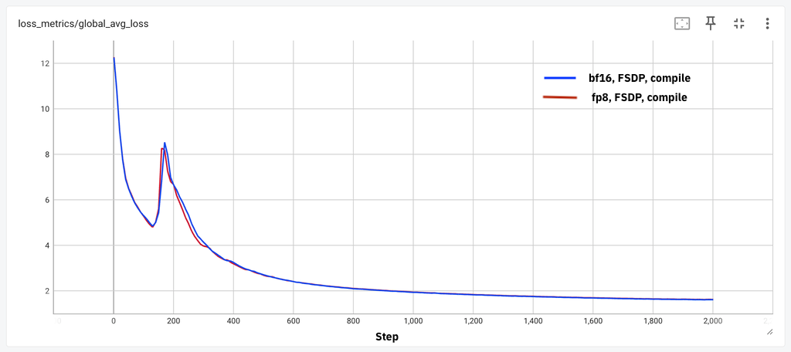
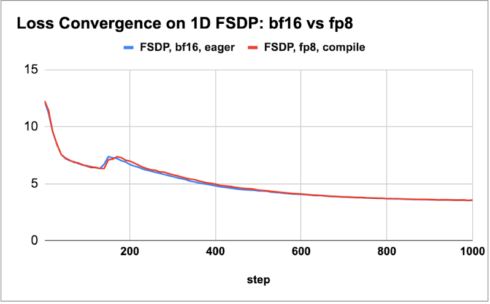

IBM: Tuan Hoang Trong, Alexei Karve, Yan Koyfman,
Linsong Chu, Divya Kumari, Shweta Salaria, Robert Walkup, Praneet
Adusumilli, Nirmit Desai, Raghu Ganti, Seetharami Seelam
Meta: Less Wright, Wei Feng, Vasiliy Kuznetsov, Driss
Guesseous
In this blog, we will demonstrate how we achieve up to 50% throughput speedup while achieving loss and evaluation benchmark parity in training over FSDP1 bf16 training. We achieve this speedup by leveraging FSDP2, DTensor, and torch.compile with torchao’s float8 via linear layer updates (compute), and float8 all_gathers for weight communication. We showcase these improvements across a spectrum of Meta LLaMa model architecture sizes, ranging from small 1.8B model size all the way to 405B model size, making training faster than ever.
We demonstrate these improvements using the Meta Llama3 architecture,
and then perform model quality studies at two scales: 100B tokens at 8B
model size, and 50B tokens at 70B model size, which provide an exact
comparison of float8 and bf16 training loss curves. We demonstrate that
the loss curves result in identical loss convergence across these model
training runs compared to the bf16 counterpart. Further, we
train a 3B model to 1T tokens using the FineWeb-edu dataset and run
standard evaluation benchmarks to ensure that the model quality is
intact and comparable to a bf16 run.
At IBM Research, we plan to adopt these capabilities for our data
ablations to improve the number of experiments we can perform in a given
GPU budget. Longer term, we will follow up with a larger scale model run
to demonstrate the end-to-end feasibility
of float8 training.
What is Float8?
The float8 format for training models was introduced by
NVIDIA, ARM, and Intel in a 2022 paper which
demonstrated the feasibility of training using lower precision float8,
without sacrificing model quality. With the introduction of newer GPUs
like the NVIDIA Hopper series, FP8 training became feasible with the
potential of more than 2x improvement in training throughput due to
native float8 tensor core support. There are a few challenges to realize
this promise:
(i) Enable the core model operations
like matmul and attention in float8,
(ii) Enable float8 training in a distributed framework,
and
(iii) Enable weight communication between GPUs
in float8.
While the float8 matmul was enabled by NVIDIA
libraries, the latter two were provided in recent updates
to FSDP2 and torchao.
In this blog, we are using torchtitan as the entry point for
training, IBM’s deterministic data loader,
the float8 linear layer implementation from torchao, and
the float8 all gather from the latest PyTorch nightlies in
conjunction with FSDP2. For this training, we are using the float8 per
tensor (tensorwise) scaling granularity rather than rowwise. We
leverage torch.compile to ensure that we get maximum
performance gains. We are
computing attention in bf16 using SDPA and are
currently working on moving this to float8 as well.
Experiments
We perform various experiments to demonstrate the benefits of float8 training. The first is to ensure that model quality is not sacrificed. To verify this, we train an 8B model and 70B model for a few thousand steps and compare the loss curves between both the float8 and bf16 training run. Our experiments are performed on three different H100 clusters with 128, 256, and 512 H100 GPU configurations in very different environments to demonstrate reproducibility. The first cluster is customized on Grand Teton in Meta with 400Gbps custom interconnect, the second is an IBM research cluster with 3.2Tbps Infiniband interconnect, and the third is an IBM Cloud cluster with 3.2Tbps RoCE interconnect for GPU-to-GPU communication.
First, we plot the loss curve comparisons for both these models in the below figures to demonstrate loss parity for a few thousand steps.


Figure 1: (a) 8B model loss parity for 2k steps, (b) 70B loss parity for 1k steps
We observe that across these different models and in different
environments, we obtain loss parity for the small scale of tokens. Next,
we characterize the throughput gains for four different model sizes
ranging from 1.8B to 405B. We explored the best batch size and
activation checkpointing schemes for both the float8 and bf16 training
runs to determine the tokens/sec/GPU (wps) metric and report the
performance gain. For the 405B model, we
leveraged DTensor for tensor parallel training with FSDP2.
We use a sequence length of 8K for all our measurements.
| Model size | wps (bf16) | wps (float8) | Percent gain |
| 1.8B | 29K | 35K | 18% |
| 8B | 8K | 10K | 28% |
| 70B | 956 | 1430 | 50% |
| 405B (TP4) | 149 | 227 | 52% |
Table 1: Performance gains over bf16 (both bf16 and float8 use torch.compile)
We observe from Table 1 that the gains for larger models (70B and
405B) reach up to 50%, the smaller models see gains between roughly 20
and 30%. In further experiments, we observed that the addition
of float8 all_gather enables a boost of ~5%
beyond the compute itself in float8, which is inline with
the observations in this blog.
Second, to demonstrate the effectiveness of an FP8 model, we trained
a 3B model following the Llama3 architecture for 1T tokens using the
FineWeb-edu dataset from Hugging Face. We performed evaluations using
the lm-eval-harness framework and present a small portion
of these results in the below table. We observe that
the bf16 performance is marginally better than
the float8 scores (about one percent). While some scores
are significantly better with bf16 (e.g., MMLU is 3 pts
higher), we expect these gaps to vanish when the right hyper parameters
are chosen and across larger scale training runs (e.g.,
the bf16 run had half the batch size and it is well known
that smaller batch size runs can improve evaluation scores).
| Benchmark | Score (float8) | Score (bf16) |
| MMLU (5-shot) | 0.26 | 0.29 |
| ARC-e | 0.73 | 0.73 |
| ARC-c | 0.43 | 0.46 |
| Hellaswag | 0.65 | 0.67 |
| sciq | 0.89 | 0.88 |
| OpenBook QA | 0.43 | 0.43 |
| PIQA | 0.76 | 0.76 |
| Winogrande | 0.60 | 0.65 |
| Average | 0.59 | 0.60 |
Table 2: Benchmark scores for float8 trained model running in FP16 for eval (at 1T tokens of FineWeb pre-training).
Finally, we scale our experiments to 512 H100 GPUs on the IBM Cloud cluster. We were able to recreate the results and speedups that we observed even at 512 GPU scale. We summarize these results only for the large models in the below table (70B and 405B).
| Model size | wps (bf16) | wps (float8) | Percent gain |
| 70B | 960 | 1448 | 51% |
| 405B (TP4) | 152 | 217 | 43% |
Table 3: Performance gains over bf16 (both bf16 and float8 use torch.compile) for 512 GPU scale
Future work
We are also working on evaluating other forms of parallelism such as Context Parallelism. We plan to evaluate all of these features to demonstrate the composability and ability to make choices for training large scale models.
Acknowledgements
We thank Davis Wertheimer from IBM Research for enabling the data loader for torchtitan runs enabling us to replay data in the same order across multiple runs. We also thank IBM Cloud for enabling us with early test access to the H100 cluster.